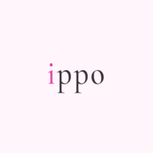

こんにちは
あなたさん
4月20日（月）
0日連続 🌸

今日を記録する
まだ今日の記録がありません
›
0
連続記録日
日
0
総記録日数
日
—
今週のファスティングタイム
累計
今日の記録サマリー
未記録
記録するとここにサマリーが表示されます
日
月
火
水
木
金
土
today's message
からだの小さな変化に
気づくことが、最初の一歩。
気づくことが、最初の一歩。
インサイト
記録が語るあなたのパターン
記録日数
0
日
最長連続
0
日
平均食事回数
—
食 / 日
平均ファスティング
—
時間
FOOD × BODY
食事とからだの関係
読み込み中...
CYCLE × SYMPTOMS
生理周期と症状の関係
読み込み中...
COMPARISON CHART
比較グラフ
TIMELINE
タイムライン
COMMUNITY VOICE
みんなの声
同期中
今日を記録する
MEAL TIMELINE
食事の記録
時間と食べたものを自由に記入してください
例）0830 朝食 / 1200 昼食
例）0830 朝食 / 1200 昼食
BODY-CONSCIOUS CHOICES
🌿 からだのための選択ガイド
BASAL TEMPERATURE
基礎体温(決まった時間帯計測)
℃
SYMPTOMS
今日の症状
頭痛
腰痛
下腹部痛
むくみ
肌荒れ
便秘
下痢
吐き気
倦怠感
冷え
発熱
関節痛
不眠
イライラ
不安感
食欲増加
食欲低下
眠気
集中力低下
気分の落ち込み
おりもの
胸の張り
ほてり
動悸
のぼせ
膣の乾燥
MENSTRUAL CYCLE
生理の状態
なし
少量
普通
多い
不正出血
MEDICATION
服薬・サプリ
低用量ピル
ジエノゲスト
漢方薬
鎮痛剤
鉄剤
サプリメント
その他
ENERGY
エネルギーレベル
SLEEP
睡眠
就寝
起床
睡眠の質
FACTORS
生活ファクター
カフェイン
アルコール
運動した
ストレス高
仕事が忙しい
外出した
雨・低気圧
夜更かし
入浴・半身浴
瞑想・リラックス
BOWEL
お通じ
JOURNAL
今日のメモ
設定
👤
名前未設定
0
記録日数
0
連続日数
テーマカラー
🌸 桜
🪸 珊瑚
🌙 深夜
🌿 若葉
空
🍯 蜂蜜
わたしの健康プロフィール
気になる症状
設定する
›
気になる疾患
設定する
›
わたしの目標
タップして設定
›
データ管理
データをエクスポート
CSV（受診用）/ JSON（バックアップ）
›
クラウドから復元
データが消えた場合に使用
›
バックアップ履歴
過去のスナップショットから復元
›
データ診断・修復
3箇所のデータを比較・自動修復
›
すべての記録を削除
›
感想・フィードバック
あなたの声がアプリをより良くします。
次の機能は皆さんのフィードバックで決めます。
次の機能は皆さんのフィードバックで決めます。
⭐
⭐
⭐
⭐
⭐
このアプリは医療アドバイスを提供するものではありません。
卵巣嚢腫・PCOS・子宮内膜症などは婦人科への受診をおすすめします。
ippo v1.0 — あなたのからだに寄り添うアプリ